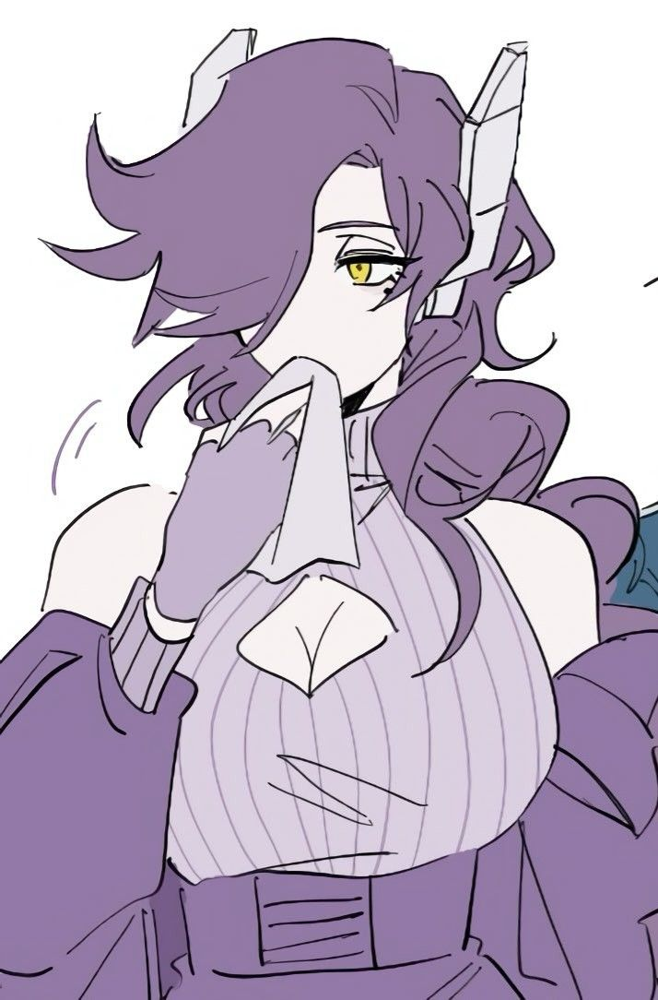
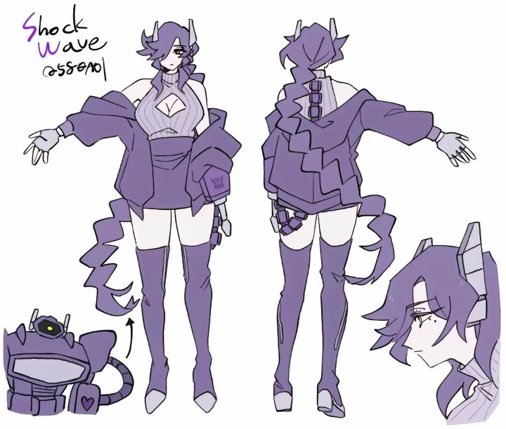

ШОКВЕЙВ
досье семьи «Среднего Пальца» · младшая сестра, за которой должок · №0558A01
Шоквейв — не позывной, а официальное, юридически закреплённое имя. Старое имя вычеркнула сама, добровольно, и заменила на то, каким её звала Рэтчет. Другого имени не носит.
Травмы: нет правого глаза; правая рука была взорвана и заменена самодельным протезом-оружием.
Сидит в клубах Среднего за исследованиями, а не на передовой — не от слабости, просто её польза именно там. Однако, время от времени ее для галочки все таки вытаскивают сестры и братья на охоту.
Холодная, властная, уверена, что видит вещи яснее всех вокруг. Семью Среднего считает наивной и сентиментальной — но пользуется их защитой, потому что это самая эффективная сила рядом. Предпочитает себя с ними не сравнивать. В случае опасности, волнений, или чего-то подобного обычно сразу начинает свои попытки командовать, особенно тогда, когда эти самые проблемы могут касаться ее. Большинство окружающих она не воспринимает всерьез, считая что они глупцы что не видят очевидного, однако она даже частично благодарна такому истечению обстоятельств, ведь так в разы легче манипулировать окружением. Себя Шоквейв не то чтобы считает венцом творения, но и проблем с само-оценкой у нее явно не имеется. Любые поставленные задачи от других она воспринимает скорее как предложения чем ей заняться, она предпочитает везде сама решать что и когда она будет делать, даже если на практике ее планы окажутся крайне неэфиктивными.
Найти Рэтчет. Довести кристаллы до конца — на этот раз без чужого разрешения.
Панический страх остаться одной, окончательно и без остатка — при полной убеждённости, что лучше других знает, что для них правильно. Связи между этим и своими же поступками не видит.
Почти полностью полагается на кристальную пушку — ближний бой даётся плохо. Боезапас критически ограничен из-за дефицита кристаллов.
 не её стиль
не её стильИсследователь W Corp, работала с напарницей Рэтчет над кристаллами Окраин, способными и лечить, и уничтожать. Шоквейв настаивала на оружии; Рэтчет — на медицине.
Спор перешёл в физическое противостояние. Взрыв нестабилизированного кристалла стоил Шоквейв глаза и руки, Рэтчет — челюсти.
Обе уволены, W Corp сочла кристаллы слишком опасными. Шоквейв сбежала с частью образцов и сама построила себе оружие-протез. С тех пор в розыске. Вскоре после потери связи с Рэтчет и сбора протеза вступает в Средний Палец после взвешивания собственных опций, к счастью с доступом к оружию подобному тому что есть у нее, она с легкостью туда попала.
Жива, местонахождение неизвестно ни ей, ни Шоквейв. Считает, что Шоквейв прячется где-то с кристаллами. Поиски не прекращались.

